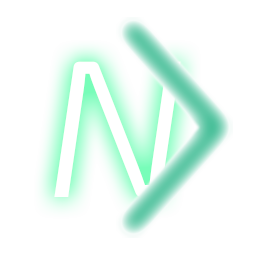

NexDirect
A free, open-source alternative osu! beatmap downloader.
Scroll down for more information!

Get your beatmap searching done quicker and neater, in a more beautiful looking interface right at your disposal.

Beatmap downloading handled swiftly and delivered straight to your osu! game: no manual opening and fiddling with files required.

Already actively used and approved by 2 people in the world! ... maybe you can help make a difference today! (no pressure)
Quick (more detailed) Feature Rundown
- An overlay mode, to overlay the program over your osu! game for quick, easy beatmap downloading.
-
 Download beatmaps straight from the web to your osu! beatmaps folder where it is ready to be processed.
Download beatmaps straight from the web to your osu! beatmaps folder where it is ready to be processed.
-
 Quick, easy downloading from in-game and also through the official website's beatmap page.
Quick, easy downloading from in-game and also through the official website's beatmap page.
(through the use of our userscript for the beatmap page, and the use of our linker for in-game.) -
 Choose between the Bloodcat mirror or the official osu! beatmap servers.
Choose between the Bloodcat mirror or the official osu! beatmap servers.
-
 Choose your own (waifu) wallpaper for a slick customized UI!
Choose your own (waifu) wallpaper for a slick customized UI!
What's to lose? Give it a try today (and expect to stay forever! :>)
(back to top)
(back to top)